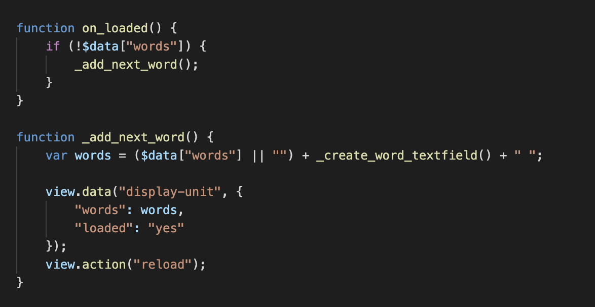

Jamkit 소개
Jamkit은 한 번의 코드 작성으로 웹 뷰에 의존하지 않는 스마트폰, 태블릿, 데스크톱 네이티브 앱을 빠르고 쉽게 만들 수 있도록 돕는 크로스 플랫폼 프레임워크입니다.
Jamkit은 한 번의 코드 작성으로 웹 뷰를 사용하지 않는 스마트폰, 태블릿, 데스크톱 네이티브 앱을 빠르고 쉽게 만들 수 있도록 돕습니다.
Jamkit은 HTML과 CSS와 유사한 구조를 사용하는 SBML과 SBSS, 그리고 라이브 리로딩 기능을 제공하는 모바일 앱 개발 프레임워크입니다. 이를 통해 개발자는 빠르게 학습하고 적응할 수 있으며, 라이브 리로딩 기능을 통해 실시간 개발 경험을 제공받을 수 있습니다.
Jamkit의 장점
Jamkit을 이용하여 모바일 앱을 개발하면 다음과 같은 장점을 누릴 수 있습니다.
- 모듈화된 UI 컴포넌트를 제공하므로 유지 관리하기 쉬운 코드를 만들 수 있습니다. 이를 통해 직관적인 레이아웃을 구현할 수 있도록 돕습니다.
- 미리 개발된 다양한 기능을 제공하여 기능 개발 시간을 단축할 수 있도록 돕습니다.
- 다중 스레드 실행을 지원하므로 응답 속도가 빠른 애플리케이션을 구현할 수 있습니다.
- 코드를 컴파일하는 과정이 없으므로, 애플리케이션 수정 사항을 즉시 살펴볼 수 있는 라이브 리로딩 기능을 기본으로 제공합니다.
Jamkit을 사용하는 이유
성능적인 측면에서 Jamkit을 사용하면 다음의 장점이 있습니다.
- Jamkit은 Android, iOS용 네이티브 앱을 동일한 코드를 사용하여 만들 수 있습니다. 따라서 많은 수의 사용자들에게 앱을 목표한 시점에 동시에 안정적으로 제공할 수 있습니다.
- Jamkit은 네이티브 기반 프레임워크이며, 기본적인 사용자 인터페이스를 구현하기 위해 웹뷰를 사용하지 않습니다.
- 네이티브 방식으로 작동함에도 Jamkit을 이용하면, 이미 배포된 앱이라도 동적으로 코드를 수정하고 배포할 수 있는 라이브 푸시/풀 기능을 제공하므로 복잡한 비즈니스 요구 사항을 달성할 수 있습니다.
Jamkit으로 할 수 있는 일
Jamkit을 이용하면 빠르게 사용자 인터페이스와 비즈니스 로직을 구현할 수 있기 때문에, 인기있는 모바일 애플리케이션이 제공하는 기능을 빠른 시간 안에 개발하여 앱을 이용해 달성하려는 비즈니스 목표를 더욱 빠르게 달성할 수 있도록 돕습니다.
예를 들어, 인기 아이돌 가수의 콘서트 실황 영상을 팬들이 쉽게 촬영할 수 있도록 도와주는 직캠 모바일 앱을 Jamkit을 이용하면 다음의 이점을 누릴 수 있습니다.
- 사용자 인터페이스 개발까지 약 2주 내외의 기간이면 손쉽게 기본적인 사용자 인터페이스를 만들 수 있습니다.
- 직캠 앱의 비즈니스 로직을 포함한 전체적인 앱의 프로토타입 제작과 출시는 약 4주 내외의 기간이면 완료할 수 있습니다.
Jamkit의 기술적 특징
Jamkit은 다음과 같은 기술적 특징을 가지고 있습니다.
- HTML/CSS와 유사한 SBML/SBSS: 이미 익숙한 웹 개발 언어의 구조를 사용하여 쉽게 접근하고 빠르게 개발할 수 있습니다.
- 자바스크립트로 프로그래밍: 자바스크립트 하나만 익히면 앱의 로직을 쉽게 제어할 수 있습니다. 
- 명령줄 도구 기반의 자동화 지원: 명령줄 도구를 기반으로 개발 과정에 필요한 서비스를 제공하여 자동화가 쉽습니다.

- 라이브 리로딩: 실시간으로 코드 변경 사항을 반영하고, 개발 과정을 더욱 빠르게 만듭니다.
- 실시간 테스트 및 디버깅: 코드 수정과 동시에 앱을 테스트하고 문제를 해결할 수 있습니다.
- 효율적인 개발 경험: 불필요한 단계를 줄이고 개발 시간을 단축시킬 수 있습니다.
- MVVM 패턴 사용: Jamkit은 사용자 인터페이스와 비즈니스 로직을 분리하는 MVVM 패턴을 사용합니다.